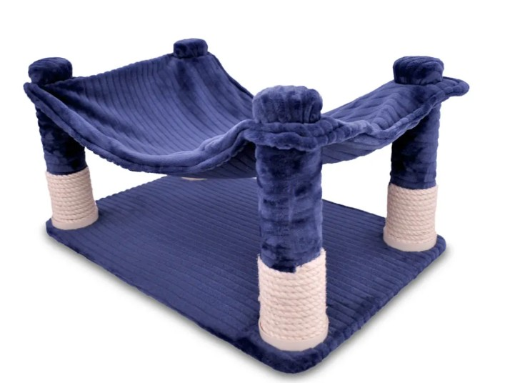

Gimnasio Compacto
Precio: $95.000
Descripción:
El Gimnasio Compacto es la solución perfecta para gatos en espacios reducidos. Su diseño práctico incluye rascador con cuerda de sisal, plataformas básicas y una pequeña cueva para que tu felino juegue, descanse y afile sus uñas.
Características principales
- Diseño compacto, ideal para apartamentos y espacios pequeños.
- Rascador con cuerda de sisal natural para el cuidado de las uñas.
- Plataformas para saltar y descansar.
- Pequeña cueva para esconderse y dormir.
- Materiales resistentes y seguros para gatos.
- Fácil de armar y limpiar.
Beneficios
- Estimula el ejercicio y el juego en gatos de todas las edades.
- Ayuda a prevenir el daño a muebles y cortinas.
- Proporciona un espacio propio y seguro para tu mascota.
Dimensiones aproximadas
- Alto: 60 cm
- Ancho: 40 cm
- Profundidad: 40 cm
Recomendado para:
- Gatos pequeños y medianos
- Dueños con poco espacio en casa
Preguntas frecuentes
- ¿Es fácil de armar? Sí, incluye instrucciones y no requiere herramientas especiales.
- ¿El sisal es reemplazable? Sí, puedes cambiar la cuerda de sisal cuando se desgaste.